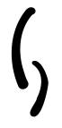

Huis van Vrede vzw biedt individuele hulpverlening op maat aan: huisbezoeken, psychosociale gesprekken, administratieve ondersteuning, budgetbegeleiding, aanleren van woonvaardigheden en harmreduction. Naast begeleiding aan huis, hebben wij bureaus die van 9 tot 17u op afspraak voor de cliënten toegankelijk zijn.
Huis van Vrede zet ppl doelbewust op gemeenschapsbeleving in door als centrum onze begeleidingen een kans te geven bij een groep te horen. Dit via een ontmoetingsruimte waar leden op vaste tijdstippen in de week zonder afspraak toegang toe verkrijgen, zowel voor administratieve of budgettaire vragen als ter ontspanning.
Er worden ook groepsactiviteiten georganiseerd zoals wekelijkse maaltijden of feesten. Eenmaal per jaar organiseert Huis van Vrede ook een vakantie voor de cliënten: drie dagen lang gaan enkele hulpverleners met een groep van dertig personen op uitstap.